RGB Enhancement
Untangling color, one channel at a time
Overview
The contrast-enhancement techniques we learned for grayscale images can also help us enhance color images, but RGB images add a wrinkle. imadjust can operate directly on the red, green, and blue channels, while grayscale techniques such as histeq and adapthisteq require us to first isolate an intensity or lightness component. Because color in RGB is represented by combinations of red, green, and blue, changing these channels independently can affect both the color and the brightness of an image.
A central idea in this module is that the best representation depends on what you want to change. If you want to adjust RGB intensities directly, work in RGB. If you want to change colorfulness while leaving hue alone, HSV gives you a separate saturation channel. If you want to enhance lightness while leaving chromatic information unchanged, L*a*b* gives you a separate lightness channel.
Choose a representation that isolates the property you want to change
- RGB: useful for direct channel-by-channel intensity adjustment
- HSV: separates hue, saturation, and value, making colorfulness easy to manipulate
- L*a*b*: separates lightness from chromatic information, making lightness-based contrast enhancement easier
Rather than treating color-model conversion as an extra step, think of it as choosing a coordinate system that makes the image property you care about easier to manipulate.
This module is broken down into the following sections:
Things you should know
- Explain why grayscale contrast techniques don't translate directly to RGB images
- Use
imadjustto stretch each RGB channel independently - Convert an RGB image to grayscale using
im2gray - Convert between the RGB and HSV color models, and explain what Hue, Saturation, and Value represent
- Modify the Saturation or Value channel to change how vivid or bright an image looks without directly changing its hue
- Use hue-based thresholding to selectively recolor part of an image
- Convert between the RGB and L*a*b* color models, and explain why the L* channel is useful for contrast enhancement
- Enhance a color image's contrast while minimizing color shifts by adjusting only the L* channel
Key Terminology you should know
- Color Model: a mathematical way of representing color as a set of numbers (like the three channels of RGB, or the three channels of HSV)
- Hue (H): the type of color—red, green, blue, yellow, and so on
- Saturation (S): how vivid or colorful a pixel is
- Value (V): a measure that roughly corresponds to brightness
- L*a*b*: a color model that separates lightness (L*) from two chromatic channels (a* and b*)
Key Functions
- imadjust: Adjust image intensity values, per-channel if needed
- stretchlim: Find limits to contrast stretch an image
- im2gray: Convert an RGB image to grayscale
- rgb2hsv and hsv2rgb: Convert between RGB and HSV color models
- rgb2lab and lab2rgb: Convert between RGB and L*a*b* color models
The Trouble with RGB Channels
In an RGB image, color is represented by the amount of red, green, and blue at each pixel. This can make enhancement tricky, because the three channels are intertwined—changing one can affect both the color and the brightness of the image at the same time.
Consider the following washed-out image of Ho Chi Minh City:
| Load washed out image | |
|---|---|

We can use the course function mmHistColor to overlay the histograms of the three channels on top of each other.
| Overlay the RGB channel histograms | |
|---|---|
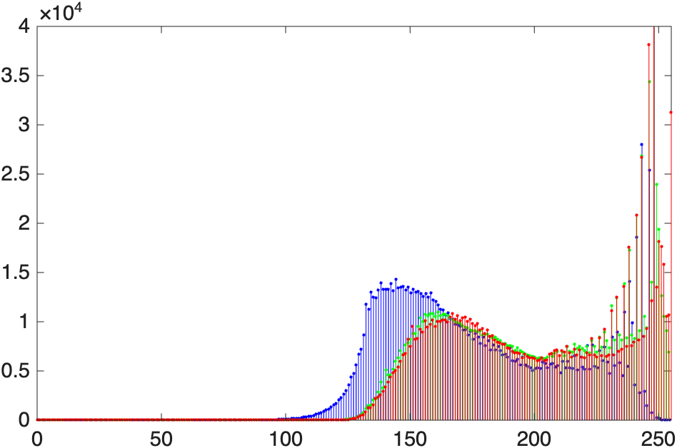
Notice how the histograms for all three channels are shifted to the right. This helps explain the image's bright, washed-out appearance.
Contrast Correction using imadjust
We previously used imadjust to fix intensity distribution issues and correct grayscale images.
For an RGB image, imadjust becomes a little more complicated if we want to adjust each color channel independently. Instead of one pair of intensity limits, we can provide a 2×3 matrix containing separate limits for the red, green, and blue channels. We can even specify a different gamma value for each channel:
img_adj = imadjust(img, [low_in_R low_in_G low_in_B; high_in_R high_in_G high_in_B], ...
[low_out_R low_out_G low_out_B; high_out_R high_out_G high_out_B], ...
[gamma_R gamma_G gamma_B]);
Stretchlim
stretchlim helps automatically determine useful input limits for imadjust. By default, it finds lower and upper limits that exclude the darkest 1% and brightest 1% of pixels. For an RGB image, it calculates these limits independently for the red, green, and blue channels and returns a 2×3 matrix. Rather than stretching the image itself, stretchlim identifies the range of values to stretch; imadjust performs the actual remapping.
Here, we pass our washed-out image to stretchlim, and then pass those limits to imadjust:
| Auto-stretch each channel | |
|---|---|
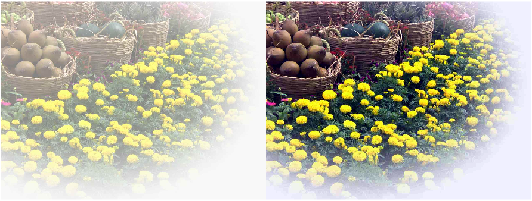
The adjusted image on the right uses more of the available intensity range, so the contrast is stronger and the image looks less washed out.
We can see what has changed if we inspect the histogram:
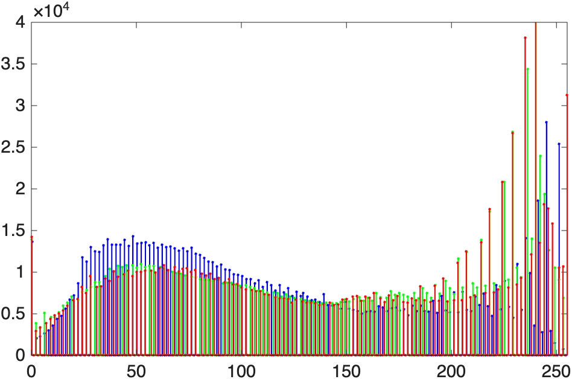
The channel intensities are now spread more broadly across the available range.
Finding the right numbers with ImageAdjuster
Guessing at six intensity limits and three gamma values by hand is tedious. The free ImageAdjuster app (by Brett Shoelson, available from the Add-On Explorer) lets you drag sliders for each channel and preview the result live. When you're happy with the adjustment, it prints the exact imadjust call—ready to paste into your own code.
Converting to Grayscale
Sometimes you want—or need—to work with a grayscale image instead of a color one. The function im2gray converts an RGB image to grayscale. Here's a colorful image of the basilica that we will convert to grayscale:
| Convert to grayscale | |
|---|---|
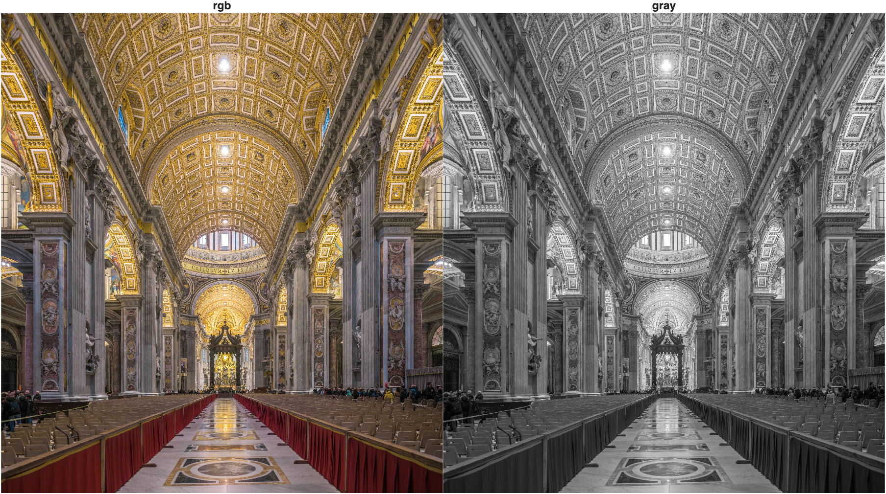
Now the image is grayscale. For images with the same width, height, and data type, an RGB array requires roughly three times the memory of its grayscale counterpart because it stores three values per pixel instead of one.
Enhancing Color Images with Different Color Models
RGB is great for storing and displaying color information, but it isn't always the easiest representation for editing a particular visual property. A useful strategy is to ask: what property do I want to change, and which color model isolates that property most cleanly? We can then convert the image into that color model, modify the relevant channel, and convert back to RGB for display.
The HSV Color Model
The HSV color model represents color using three components:
- Hue (H): the type of color, such as red, green, blue, or yellow
- Saturation (S): how vivid or colorful the pixel is
- Value (V): roughly corresponds to brightness; mathematically, it is the largest RGB component at each pixel
Instead of asking "how much red, green, and blue should I change?", HSV lets us ask more natural questions: What if I make the colors more vivid without changing their brightness? Can I brighten the image without changing its hue?
This is a prime example of our central strategy: choose a representation that isolates the property you want to change. In HSV, saturation is its own channel, so we can change colorfulness without directly changing hue.
Consider the following image of a swimmer:
| Load the swimmer image | |
|---|---|
We can convert it to HSV using rgb2hsv:
| Convert to HSV | |
|---|---|
Now we have a second "image" with three channels. But as we can see in the figure below, these channels contain vastly different information:
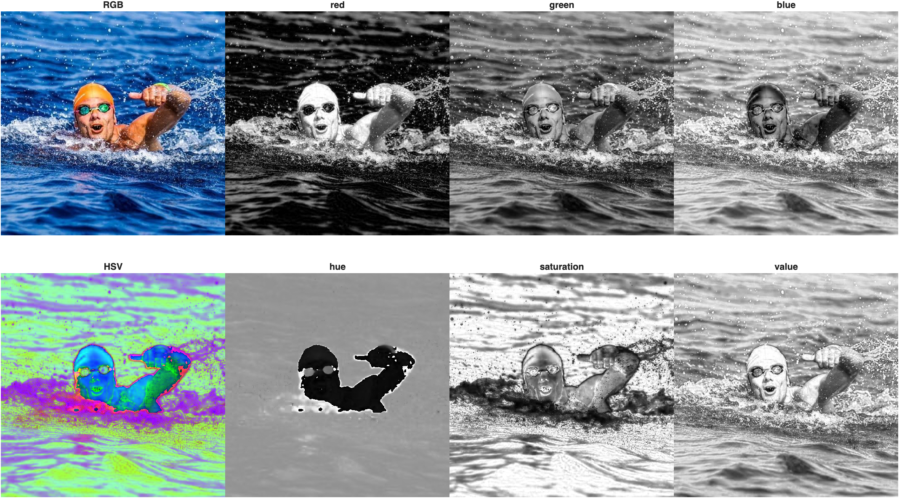
Top row: RGB and its channels. Bottom Row: HSV and its "channels". Since the HSV image is not an RGB image, it does not display properly. But examining the channels in the HSV image can give you some indication of the information contained in each channel. Notice how cleanly the swimmer separates from the water in the hue channel because he has far different values than much of his surroundings. Also, the value channel almost looks a grayscale version of the RGB image, a good indicator of brightness in the image.
Code used to generate figure above
Change Saturation
Saturation controls how vivid the colors are. Multiplying the saturation channel by a factor makes the colors less vivid (< 1) or more vivid (> 1):
| Reduce saturation | |
|---|---|
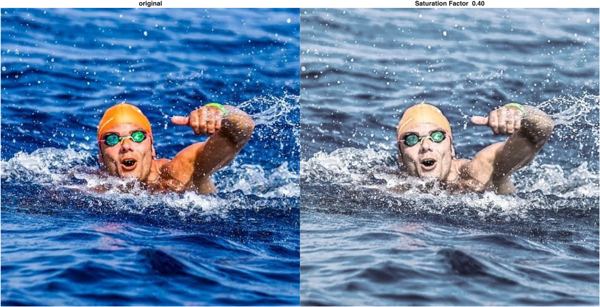
Change Value
Value roughly corresponds to brightness. We can darken or brighten an image by scaling the value channel:
| Reduce brightness | |
|---|---|
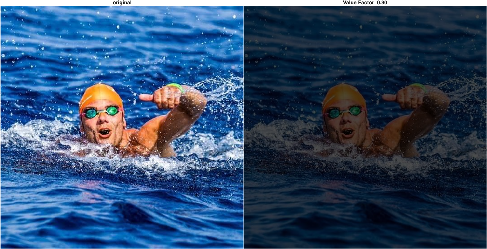
Note that a value of 0 is black, regardless of hue or saturation.
Color Swapping
We can also use the hue channel to replace colors in an image. First, let's look at the distribution of hues:
| Histogram of the hue channel | |
|---|---|
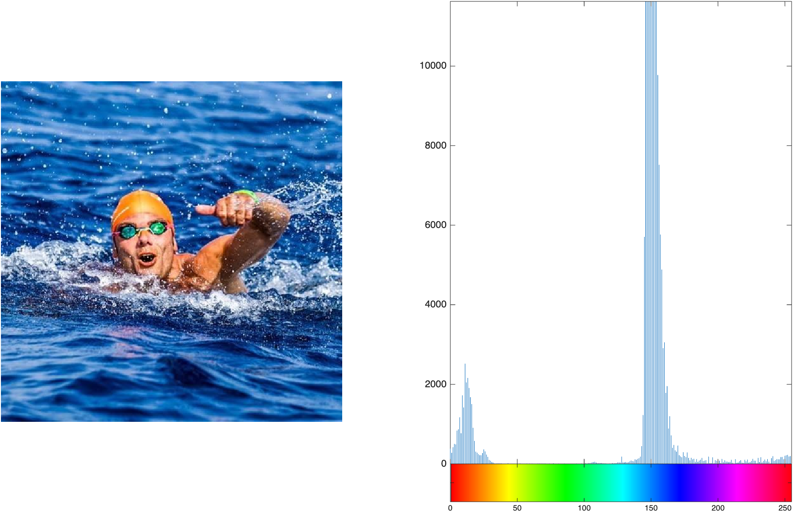
This image is mostly blues and reds. Notice that the water's hue values are larger than the swimmer's—that separation makes this a good candidate for color replacement.
To replace the ocean's color, we can create a logical mask from the hue channel and assign it a new hue value. For this particular image, the water occupies much of the image and falls within a convenient range of relatively high hue values, so the mean hue provides a simple image-specific threshold:
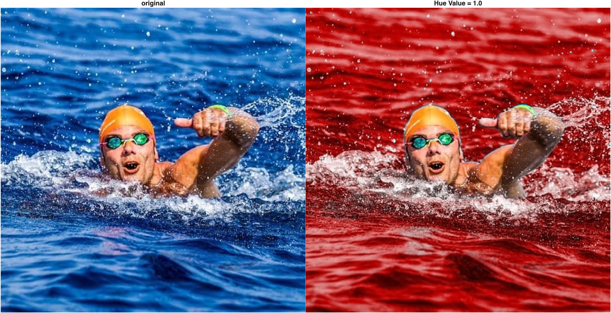
This kind of selective recoloring would be difficult to pull off directly in RGB space, where hue isn't its own channel. Also notice that hue values of 0 and 1 produce the same result because HSV wraps around like a color wheel—0 and 1 are the same shade of red. Because hue is circular, an ordinary arithmetic mean is not a general way to calculate an average hue; it simply works as a convenient threshold for this particular image.
The L*a*b* Color Model
HSV is useful when we want to work directly with hue or saturation, but its value channel does not completely isolate perceived lightness from color. When the goal is contrast enhancement, we can choose a representation that separates lightness more directly from chromatic information.
The L*a*b* color model represents lightness in the L* channel and chromatic information in the a* (green–red) and b* (blue–yellow) channels. This lets us modify L* while leaving the a* and b* values unchanged, making L*a*b* a useful choice for lightness-based contrast enhancement with fewer unintended color shifts.
Consider this dimly lit photo:
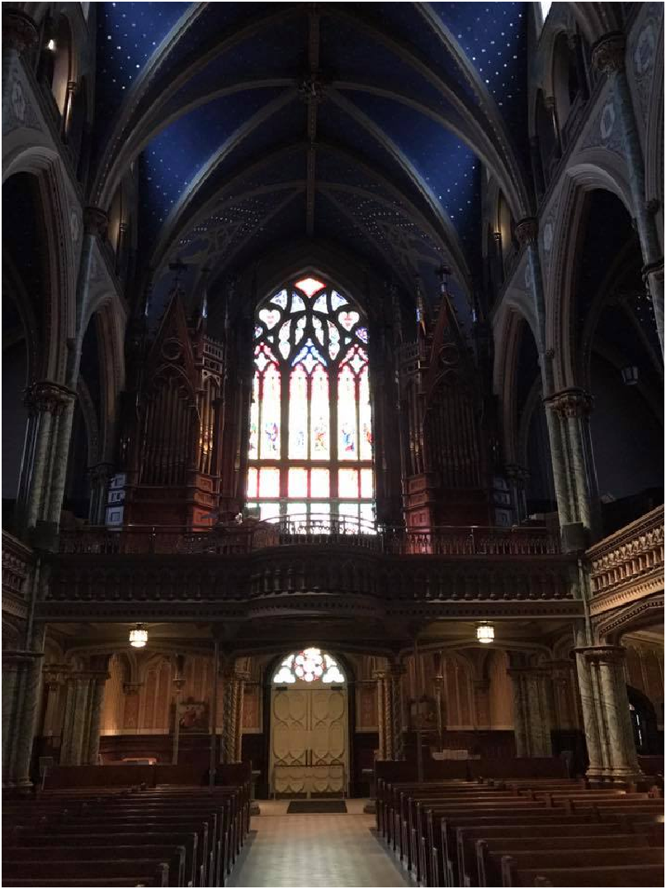
Convert it to L*a*b* and look at each channel, along with its histogram:
| Convert to L*a*b* and display channels | |
|---|---|
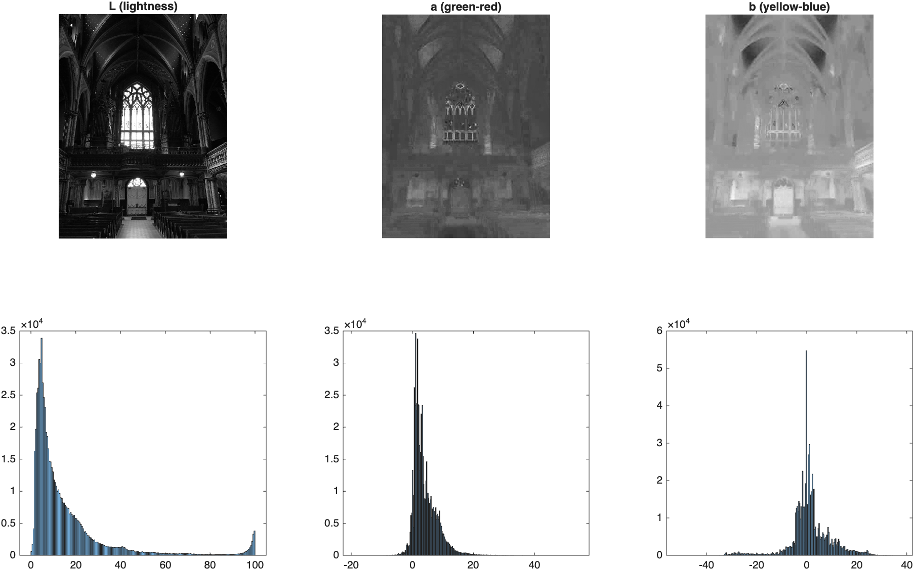
The L* plane looks like a black-and-white image, but darker, and its histogram is heavily concentrated toward low values, confirming that most of the image has low lightness. Notice the range of values: L* runs from 0 to 100, while a* and b* can be negative or positive. This is no longer an RGB image; it's an L*a*b* image, and MATLAB's image functions expect it to be handled a little differently.
To enhance contrast while leaving the chromatic channels unchanged, we work on the L* plane alone. First, scale it from its native 0–100 range down to 0–1 so we can treat it like an ordinary grayscale image. Again, the strategy is the same: isolate the property you want to change, modify that property, then recombine the image.
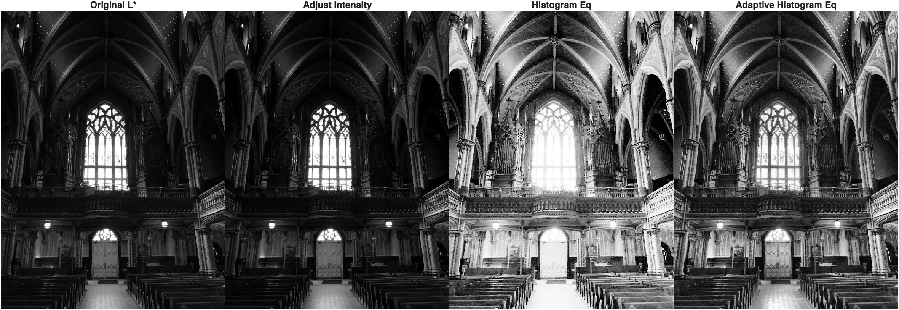
The three methods redistribute lightness differently.
imadjustperforms a global contrast stretch,histeqredistributes the global histogram, andadapthisteqworks locally. Which result is most useful depends on the image and the goal.
To bring a corrected L* plane back into a full-color image, we: (1) scale it back to the 0–100 range, (2) insert it back into the L*a*b* image in place of the original L* plane, and (3) convert the whole L*a*b* image back to RGB.
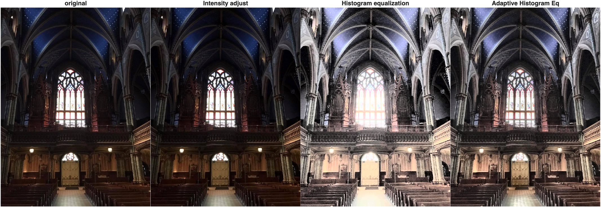
All three corrections change lightness while leaving the original a* and b* channels unchanged, which greatly reduces the color shifts that can occur when RGB channels are adjusted independently. Compare this with equalizing the red, green, and blue channels separately: each channel could be remapped differently, altering the color balance as well as the contrast.
At this point, the larger pattern should be clear: RGB, HSV, and L*a*b* are different representations of the same color image, but each makes different image properties easier to manipulate. Choose the representation that best isolates the feature you want to change.
Congratulations, you have made it to the end! 🎨